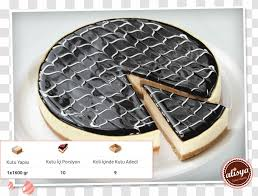
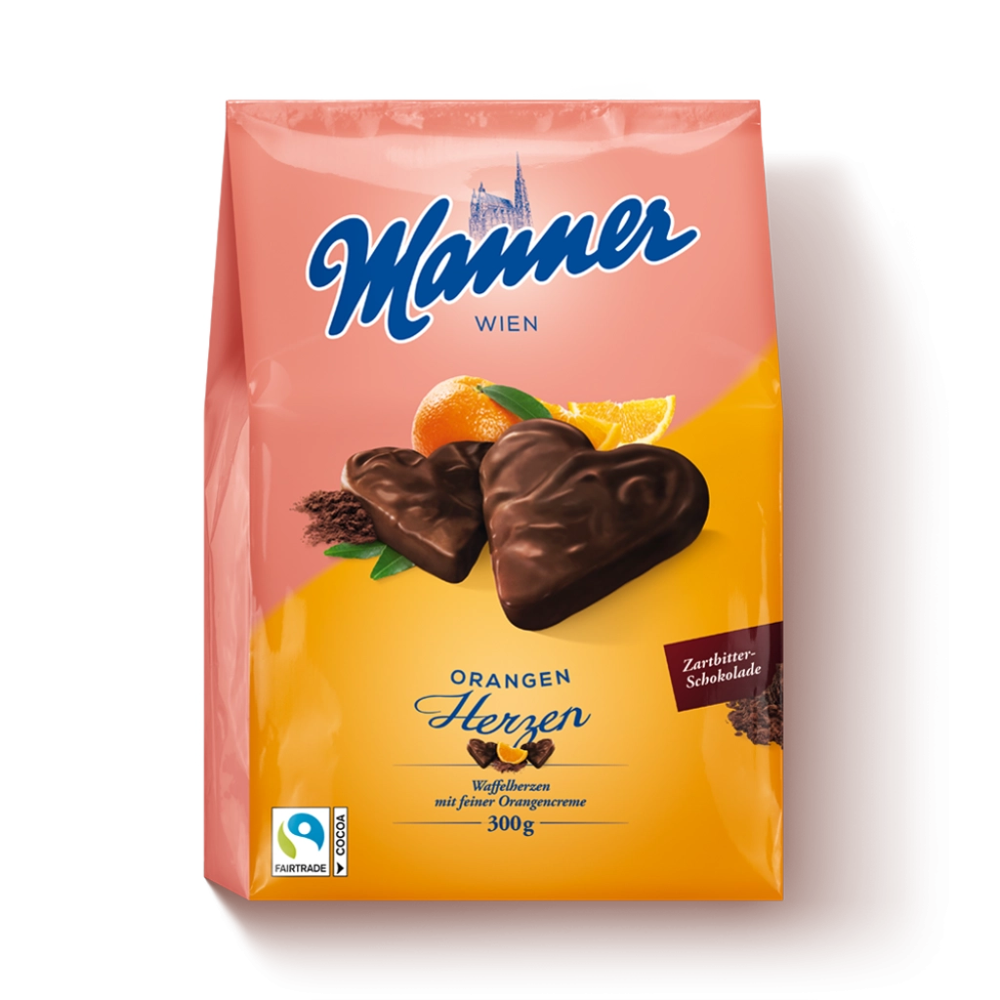
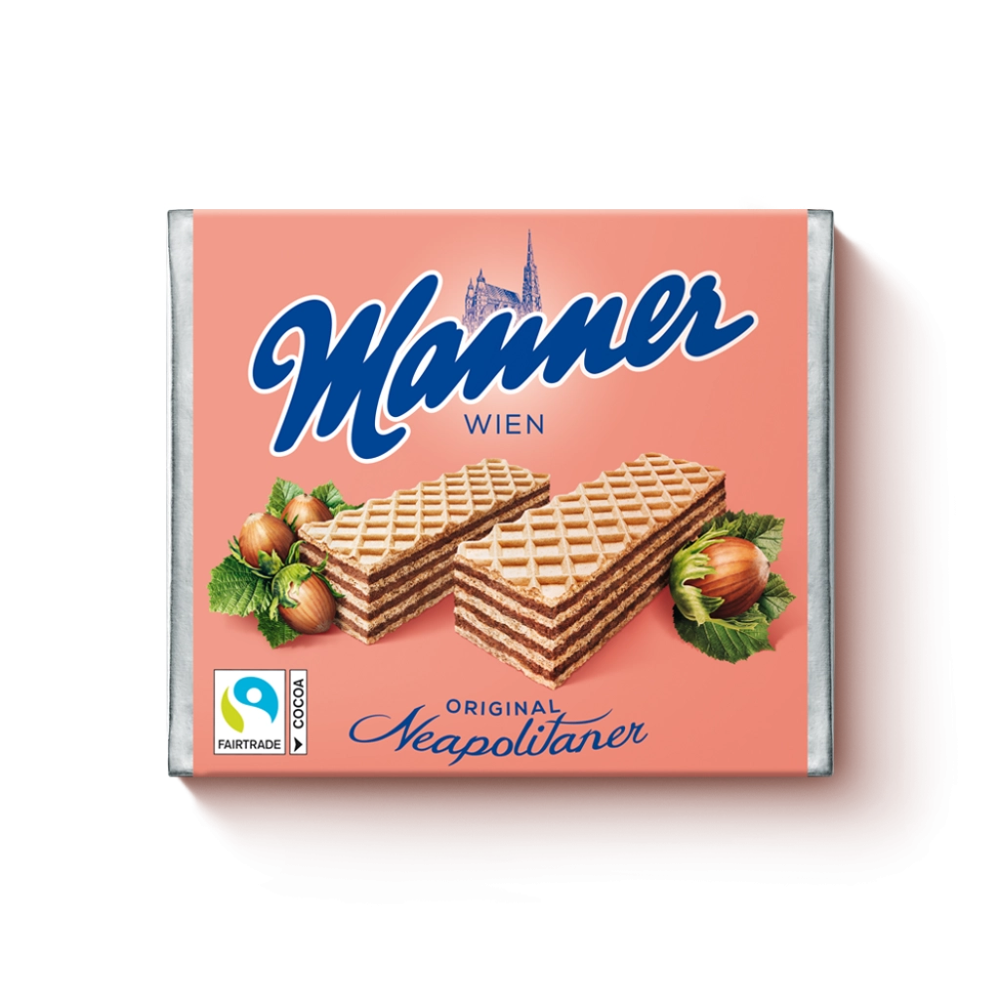
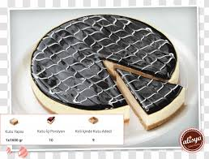
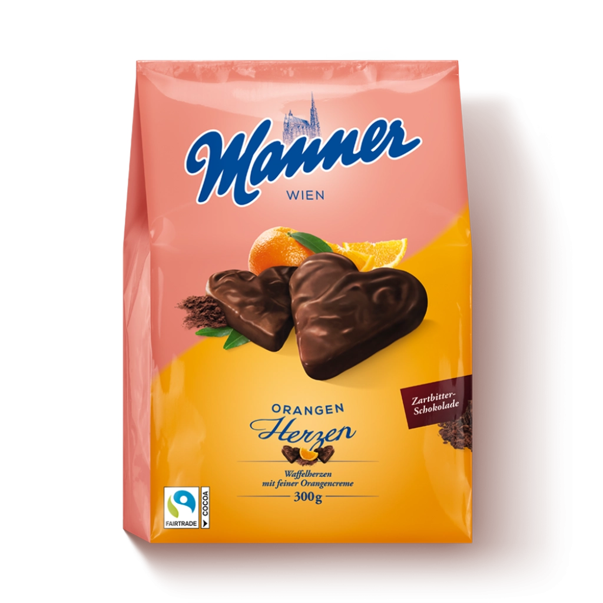
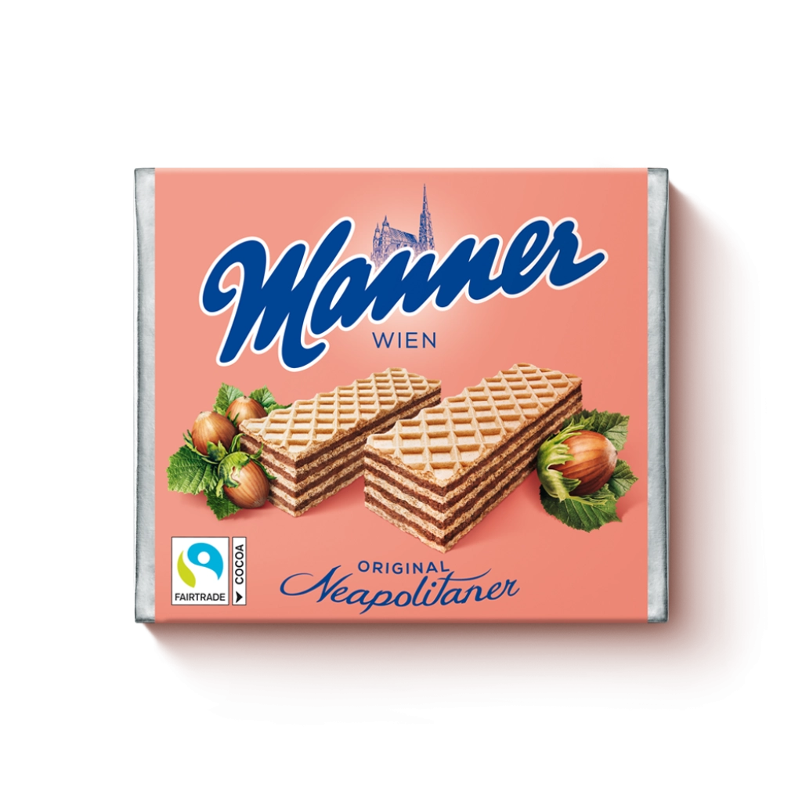
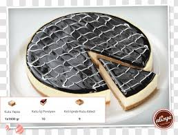
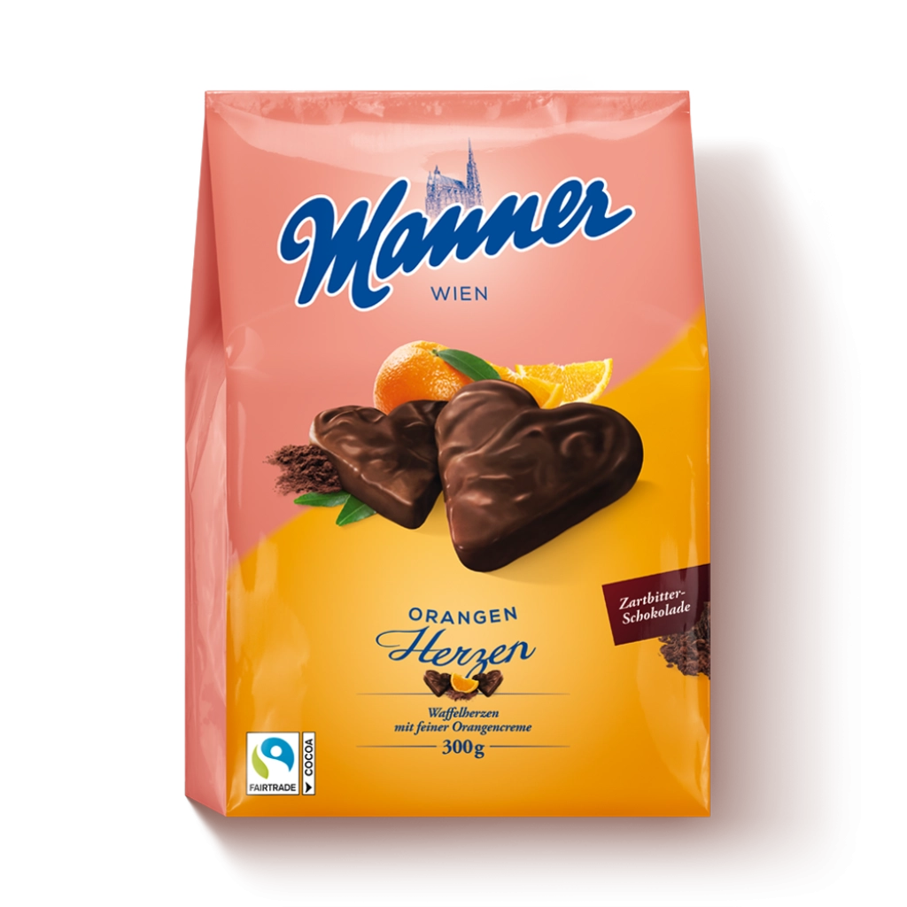
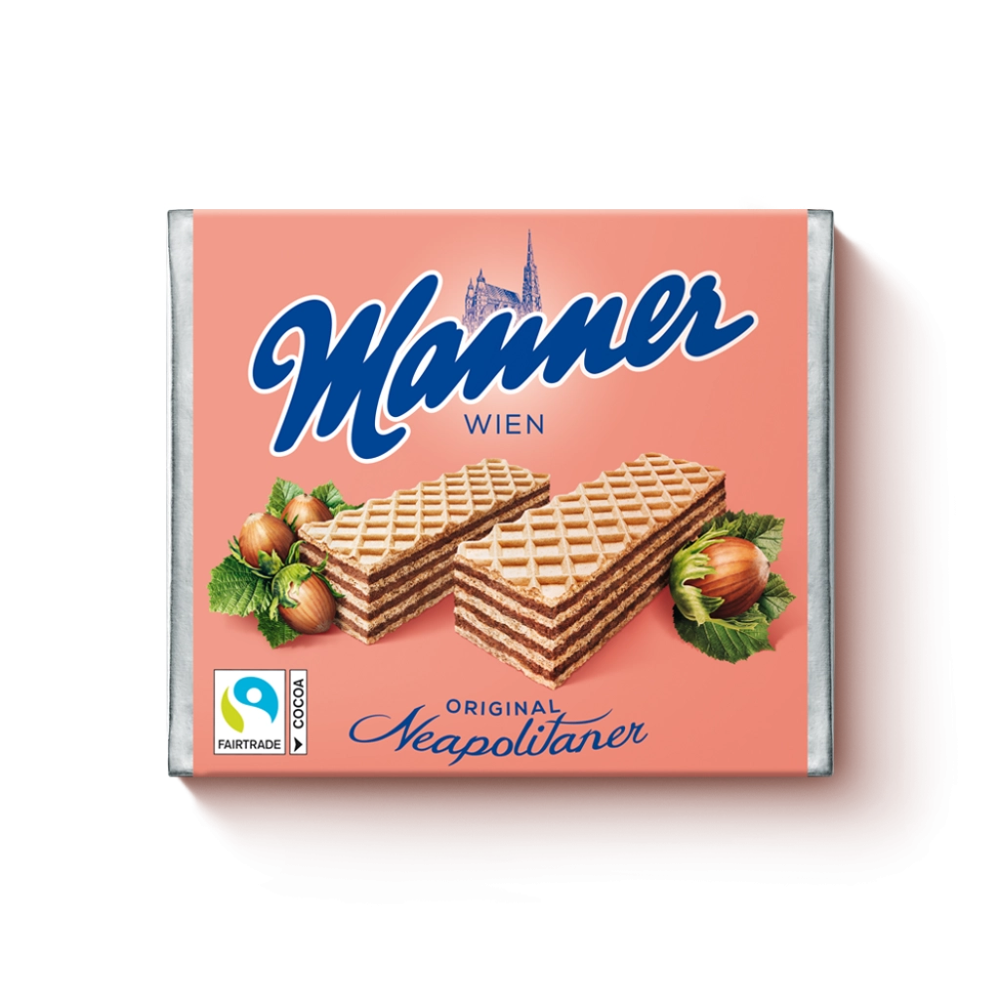

"Chocolate for everyone - great value and taste" was the motto of Josef Manner I. when he founded the confectionery dynasty in 1890. Manner is a company with a long tradition and the mission statement remains unchanged. Learn more about the cocoa beans that are roasted in-house and the delicious new creations … always true to the guideline: "The Taste of Vienna”.
The history of Casali reaches way back into the past. In 1782, Joseph Casali founded his company in the port city of Trieste, which was part of to the Austro-Hungarian monarchy. Since 1970, Casali belongs to the Josef Manner & Comp AG. Casali is famous for its delicious Rum-Kokos and fruity Chocolate Bananas. “Welcome to Casali” - it is our pleasure to welcome you on a virtual island full of chocolate fruits and exotic chocolate dragées.
Napoli offers premium products for everyone who appreciates a reasonable price. There is no dedicated online appearance for Napoli at this time. Dragee Keksi by Napoli play a very special role in the Napoli product range. Therefore, they have their very own online appearance that does this Austrian classic its justice in the most entertaining way. Get to know the motto of Dragee Keksi „wenn ich nur aufhör’n könnt“, which translates to „if only I could stop“. With the hastag #winak, Dragee Keksi are up to a never ending fun time in the digital world! Apart from Dragee Keksi, Napoli mainly offers wafers, like the Napoli wafer block.


